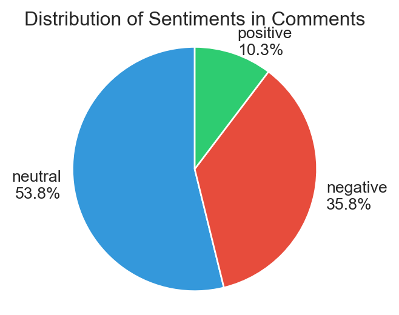
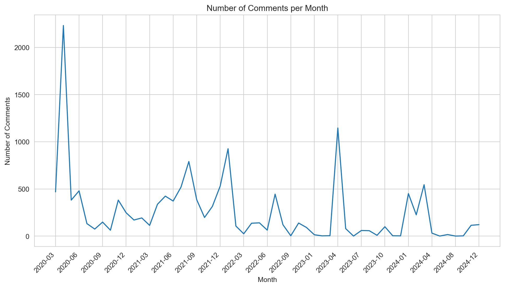

| thread_id | thread_title | thread_author | comment_id | parent_id | author | text | date | clean_text | sentiment | emotion | |
|---|---|---|---|---|---|---|---|---|---|---|---|
| 0 | 130qa8d | The “flat earth” conspiracy theory is intentio... | raf_lapt0p | jhxeksf | t3_130qa8d | AutoModerator | ###[Meta] Sticky Comment\n\n[Rule 2](https://w... | 2023-04-27 15:07:45 | sticky comment rule apply reply stickie commen... | neutral | neutral |
| 1 | 130qa8d | The “flat earth” conspiracy theory is intentio... | raf_lapt0p | jhzsd9e | t1_jhxeksf | dcforce | See what you are missing because of the Globe ... | 2023-04-28 00:49:20 | miss globe pace apologist | negative | neutral |
| 2 | 130qa8d | The “flat earth” conspiracy theory is intentio... | raf_lapt0p | jhxeulc | t3_130qa8d | WittyNameNo2 | Should we be calling this the “flat earth cons... | 2023-04-27 15:09:35 | call flat earth conspiracy theory conspiracy t... | neutral | neutral |
| 3 | 130qa8d | The “flat earth” conspiracy theory is intentio... | raf_lapt0p | ji2y3w5 | t1_jhxeulc | vld138 | I don't think this is a good idea..but in your... | 2023-04-28 17:46:38 | think good idea theory ok believe | positive | approval |
| 4 | 130qa8d | The “flat earth” conspiracy theory is intentio... | raf_lapt0p | jhynp63 | t1_jhxeulc | Emergency_Sandwich_6 | I think the actual conspiracy is that space ob... | 2023-04-27 20:01:14 | think actual conspiracy space object actually ... | neutral | neutral |
Covid-19 and 5G
Conspiracy theories during and after the pandemic
Francesco Iarlori, Armando Leotta, Adriano Oliveto, Domingo Scisci
2025-01-23
Introduction
The Transformative Impact of COVID-19
- COVID-19 has created a historic societal rift, profoundly affecting public health, social, economic, and cultural structures globally.
- It is not just a health crisis but also a social and economic crisis of unprecedented scale - Alon et al. (2020).
- The pandemic has exposed and exacerbated pre-existing social inequalities, disproportionately impacting disadvantaged groups - Bambra et al. (2020).
- Key effects:
- Acceleration of technological changes (e.g., teleworking, distance learning).
- Emergence of the “digital divide,” highlighting issues of access and equity - De’, Pandey, and Pal (2020).
- Acceleration of technological changes (e.g., teleworking, distance learning).
- Raised questions about government-citizen relationships, public safety, and individual freedoms.
COVID-19 and Social Resilience
- COVID-19 provided an opportunity to explore “social resilience,” defined as the ability of communities to adapt and transform in response to crises - keck and Sakdapolrak (2013).
- Beyond recovery, resilience includes transitioning to more equitable and sustainable systems.
- Pandemic as a catalyst for long-term societal changes, challenging traditional sociological theories.
- Offers insights into interactions between health, society, and politics, with tools to prepare for future crises.
Research Questions
- What remains of the relationship between COVID-19 and conspiracy theories (e.g., 5G)?
- What are the most widespread sentiments and emotions within conspiracy-related discussions?
- Example: The association between COVID-19 and 5G misinformation peaked in April 2020.
Methodology
Previous Analysis: UK Twitter Data
- Focused on tweets from the early months of the pandemic in the UK.
- Revealed a conspiratorial core:
- Beliefs of “powerful elites” controlling the pandemic.
- COVID-19 as “fake news” hiding dominant groups’ true interests.
- Beliefs of “powerful elites” controlling the pandemic.
- Network Analysis: The conspiratorial core is highlighted (see image).

5G Conspiracy Theories: From Twitter to Reddit
- Previous analysis on Twitter revealed a strong connection between COVID-19 and 5G conspiracy theories during the pandemic.
- Current research examines whether these trends persist on Reddit, offering a new platform and audience for analysis.
- Research focus: Investigate ongoing relevance and emotional drivers of conspiracy narratives.
Why Study Conspiracies on Reddit?
- Unique Platform Dynamics:
- Subreddits foster highly engaged and ideologically homogeneous communities.
- Decentralized structure creates echo chambers, amplifying conspiracy theories.
- Voting system prioritizes popular content, enabling rapid dissemination of narratives.
- Subreddits foster highly engaged and ideologically homogeneous communities.
- Semi-anonymous nature:
- Encourages open, honest discussions.
- Provides a rich dataset for analyzing the evolution and social impact of conspiratorial discourse.
- Encourages open, honest discussions.
Methodology: Sentiment and Emotion Analysis
- Sentiment Analysis:
- Classifies text as positive, negative, or neutral.
- Simplifies opinions and attitudes into binary or ternary categories - Liu (2012).
- Useful for monitoring online tone or consumer feedback.
- Classifies text as positive, negative, or neutral.
- Emotion Analysis:
- Identifies specific emotions in text (e.g., anger, joy, sadness, fear).
- Provides nuanced insights into emotional drivers of content - Mohammad and Turney (2013).
- Identifies specific emotions in text (e.g., anger, joy, sadness, fear).
Data Scraping Process
- Target Subreddit: r/conspiracy
- Focused on conspiracy theories and secret societies.
- Provides a rich dataset for examining conspiratorial discourse.
- Focused on conspiracy theories and secret societies.
- Tools Used:
PRAWlibrary: Python wrapper for Reddit’s API.
- Custom functions:
get_thread_list(): Retrieves a list of threads.
get_thread_comments(): Collects all comments from selected threads.
Dataset Excerpt
Analysis
Comment Activity Over Time
- Key Findings:
- Peaks:
- Early spike in May 2020, driven by heightened interest in conspiracy theories during the pandemic’s onset.
- Subsequent surges: Late 2021, early 2022, and April 2023, likely tied to specific events reigniting discourse.
- Early spike in May 2020, driven by heightened interest in conspiracy theories during the pandemic’s onset.
- Sustained Engagement: Activity levels remain steady, showing persistent community interest in conspiratorial narratives.
- Peaks:
Comment Length Distribution

Comment Length Distribution
- Most comments are short:
- Majority under 500 characters, reflecting concise exchanges (opinions, reactions).
- Majority under 500 characters, reflecting concise exchanges (opinions, reactions).
- Longer comments present:
- A smaller number exceed 1,000 characters, suggesting detailed arguments or rebuttals.
- A smaller number exceed 1,000 characters, suggesting detailed arguments or rebuttals.
- Takeaway: Subreddit is driven by quick interactions but allows for deeper discourse.
Average Comment Length Trends
Average Comment Length Trends
- Stable Average:
- Most months maintain an average comment length of 200–400 characters.
- Most months maintain an average comment length of 200–400 characters.
- Significant spikes:
- Example: Mid-2023 saw average comment lengths exceeding 500 characters, indicating periods of more in-depth discussion.
- Example: Mid-2023 saw average comment lengths exceeding 500 characters, indicating periods of more in-depth discussion.
- Fluctuations:
- Reflective of community reactions to topical events or controversies.
Sentiment Analysis: Methods
- Tool Used:
- Twitter-roBERTa-base for Sentiment Analysis.
- Trained on ~124M tweets (2018–2021) and fine-tuned using the TweetEval benchmark.
- Twitter-roBERTa-base for Sentiment Analysis.
- Implementation:
- Used Python’s
transformerslibrary to classify comments as positive, negative, or neutral.
- Used Python’s
- Output: Each comment was assigned a sentiment label for further analysis.
Sentiment Distribution
- Neutral Sentiments (53.8%): Predominantly factual or objective tones.
- Negative Sentiments (35.8%): Criticism, frustration, or disagreement, reflecting the contentious nature of conspiracy discussions.
- Positive Sentiments (10.3%): Limited expressions of support or optimism.
- Conclusion: The subreddit leans heavily towards neutral and negative tones.

Sentiment Trends Over Time

Sentiment Trends Over Time
- Dominance of Neutral Comments: Persist across all time periods.
- Peaks in Sentiment Activity:
- Early 2020, late 2021, and mid-2023, aligning with key events or controversies.
- Early 2020, late 2021, and mid-2023, aligning with key events or controversies.
- Negative Sentiments Follow Neutral Trends: Reflecting community reactions to topical issues.
- Positive Sentiments Remain Low: Even in periods of high activity.
- Conclusion: Discussions are shaped by critical and neutral tones, with minimal consensus or optimism.
Sentiment Analysis for High-Engagement Threads
Sentiment Analysis for High-Engagement Threads
- Patterns Mirror Overall Trends:
- Neutral sentiments dominate.
- Negative comments closely follow.
- Positive comments remain minimal, even in threads with 100+ comments.
- Neutral sentiments dominate.
- Insight: Popular threads reflect polarized and critical discussions rather than collaborative or positive discourse.
TF-IDF and Wordcloud Analysis
TF-IDF and Wordcloud Analysis
- TF-IDF Method:
- Highlights key terms in comments based on their frequency and uniqueness within the corpus.
- Highlights key terms in comments based on their frequency and uniqueness within the corpus.
- Key Findings:
- Positive Sentiments: Words like “thank,” “great,” and “love” reflect appreciation and curiosity.
- Negative Sentiments: Terms such as “shit,” “bad,” and “vaccine” reflect frustration and polarized topics.
- Neutral Sentiments: Common words like “people,” “think,” and “comment” suggest rational or argumentative tones.
- Positive Sentiments: Words like “thank,” “great,” and “love” reflect appreciation and curiosity.
- Conclusion: Wordclouds capture the subreddit’s diverse tone, from emotional expressions to rational exchanges.
Emotion Analysis: Methodology
- Tool Used:
- SamLowe/roberta-base-go_emotions.
- Built on roberta-base, trained on the go_emotions dataset.
- Designed for multi-label classification to capture a spectrum of emotions.
- SamLowe/roberta-base-go_emotions.
- Purpose: Identify the emotional undertones of comments beyond basic sentiment categories.
Emotion Distribution

Emotion Distribution
- Neutral Emotions:
- Dominant category with 10,183 instances, indicating most discussions are factual or emotionally neutral.
- Dominant category with 10,183 instances, indicating most discussions are factual or emotionally neutral.
- Top Positive Emotions:
- Amusement (606), admiration (515), and gratitude (419) show engagement and acknowledgment.
- Top Negative Emotions:
- Annoyance (403) and anger (257) highlight frustration and critical tones.
- Annoyance (403) and anger (257) highlight frustration and critical tones.
- Less Common Emotions:
- Sadness (169), joy (124), and surprise (90) suggest limited extreme emotional expressions.
Emotion Trends by Sentiment

Emotion Trends by Sentiment
- Positive Comments:
- Dominated by admiration, followed by gratitude and approval.
- Limited presence of amusement and joy, suggesting focus on acknowledgment rather than humor.
- Dominated by admiration, followed by gratitude and approval.
- Negative Comments:
- Driven by annoyance, far outpacing anger and disapproval.
- Sadness and amusement appear less frequently, reflecting frustration over deeper negativity or humor.
- Driven by annoyance, far outpacing anger and disapproval.
Key Insights from Emotion Analysis
- Neutrality dominates overall, reflecting the subreddit’s focus on factual or emotionally subdued exchanges.
- Positive emotions emphasize acknowledgment and engagement, with limited humor or happiness.
- Negative emotions highlight irritation and critique, with less emphasis on deep negativity.
- Comparison underscores the contrasting emotional drivers of positive (admiration) and negative (annoyance) comments.
Conclusions
Key Insights
- Dynamics of Misinformation:
- Conspiracy theories persist across platforms, with Reddit fostering thematic discussions in echo chambers and Twitter amplifying viral, concise statements.
- Conspiracy theories persist across platforms, with Reddit fostering thematic discussions in echo chambers and Twitter amplifying viral, concise statements.
- Relevance to Social Research:
- Social media data provides a rich resource for understanding misinformation and its societal impact.
- Social media data provides a rich resource for understanding misinformation and its societal impact.
- Platform Differences:
- Future research must account for differences in audience and engagement modes to ensure valid comparisons.
Challenges in Data Collection
- Resource-Intensive Process:
- High computational and operational demands.
- API limitations restrict data volume and temporal access.
- High computational and operational demands.
- Data Preparation:
- Raw data cleaning is time-consuming and costly.
- Raw data cleaning is time-consuming and costly.
- Need for Solutions:
- Optimized scraping tools and academic-focused APIs are essential.
Ethical Considerations
- Privacy Concerns:
- Even publicly available comments may inadvertently expose sensitive user information.
- Even publicly available comments may inadvertently expose sensitive user information.
- Adherence to Data Protection Regulations:
- Anonymization and GDPR compliance are critical.
- Anonymization and GDPR compliance are critical.
- Social Responsibility:
- Avoid stigmatizing communities or reinforcing biases.
- Transparency in reporting findings is essential to maintain trust.
- Avoid stigmatizing communities or reinforcing biases.
Future Research Directions
- Expanded Scope:
- Analyze longer time frames and multiple platforms for broader representativeness.
- Compare platforms to explore demographic and socio-cultural influences on discussions.
- Analyze longer time frames and multiple platforms for broader representativeness.
- Narrative Evolution:
- Study how sentiment, emotions, and conspiracy theories evolve over time.
Dashboard

Available at the following link: Covid-19 and 5G
References
Alon, Titan, Matthias Doepke, Jane Olmstead-Rumsey, and Michèle Tertilt. 2020. “The Impact of COVID-19 on Gender Equality.” https://doi.org/10.3386/w26947.
Bambra, Clare, Ryan Riordan, John Ford, and Fiona Matthews. 2020. “The COVID-19 Pandemic and Health Inequalities.” J Epidemiol Community Health 74 (11): 964–68. https://doi.org/10.1136/jech-2020-214401.
De’, Rahul, Neena Pandey, and Abhipsa Pal. 2020. “Impact of Digital Surge During Covid-19 Pandemic: A Viewpoint on Research and Practice.” International Journal of Information Management, Impact of COVID-19 pandemic on information management research and practice: Editorial perspectives, 55 (December): 102171. https://doi.org/10.1016/j.ijinfomgt.2020.102171.
keck, Markus, and Patrick Sakdapolrak. 2013. “What Is Social Resilience? Lessons Learned and Ways Forward.” Erdkunde 67 (1): 5–19. https://www.jstor.org/stable/23595352.
Liu, Bing. 2012. Sentiment Analysis and Opinion Mining. San Rafael: Morgan & Claypool Publishers.
Mohammad, Saif M., and Peter D. Turney. 2013. “Crowdsourcing a WordEmotion Association Lexicon.” Computational Intelligence 29 (3): 436–65. https://doi.org/10.1111/j.1467-8640.2012.00460.x.
Comment Activity Over Time
